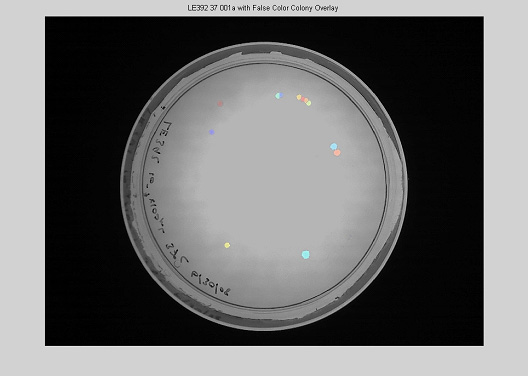

Colony Counter
Introduction and Download
This is a program that I wrote for my REU in the summer of 2008 at the University of Illinois at Urbana Champaign for Prof. Ido Golding. It interfaces with a webcam attached to the computer, uses it to capture an image of a bacterial plate and counts the number of colonies on the dish.
MCR Installer - The MATLAB component runtime that must be installed before running the program installer.
Counter_pkg - Standalone executable (windows only)
Matlab code - .zip of m files
Installation
If the Matlab Runtime has not been installed download and install the Matlab runtime file. Then download the counter_pkg.exe program and run it. This will create counter.exe which is the standalone application. Alternatively you can download the Matlab files in a .zip package and run from the Matlab command prompt.
Documentation and References
Final Report - This documents the successes and failures of the counter software and hardware. It also contains all references used
Manual and Documentation - Documentation for the software as well as the hardware used in this project.
Cell Profiler - A useful (and free) versitile image processing tool for Biological image analysis. It has a sharp learning code, however, you may find it useful. The code here was developed independently of this project.
Screenshots

The main program that may be used to capture and analyze images.
The program that interfaces to the camera and aquires the image.
Another program that can be launched for applying cutoffs to the parameters and calculating intensity values.

The output image of the program. Also output is an exel file containing most of the parameters of each spot (size, eccentricity, etc.).
A picture of the hardware setup showing the light box with webcam attachment, the source of backlighting and the removable diffuser.
Deviation between automated counting and hand counting for several samples.